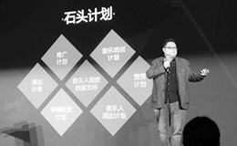

赵雷《无法长大》销量破20万，
创独立音乐全网新
标杆
2017-02

发布《中国独立音乐人生
存现状报告》
2016-12

李志《在每一条伤心的应
天大街上》两天销售额破
百万创纪录
2016-11
- 
启动“石头计划” 拟一
年2亿扶持独立音乐人
2016-11

>陈粒《小梦大半》销售额
破百万
2016-08

启动理想音乐行走季，打
造国内首部音乐公路电影
2016-07

启动理想音乐人计划
携独立音乐人走进高校
2015-10
-
投拍李志第一支MV
》—《山阴路的夏天
2014-09
-
与太平洋咖啡合作举办
“原创音乐人咖啡之
旅”
2014-08

举办线下演出
《 听见好时光 . 网
易音乐人Live》
2014-08
从线上的专属主页、原创榜单、歌曲推荐，到线下的Live巡演，专辑制作、资金支持，
我们倾尽全力为有实力的原创音乐人提供一系列推广扶持计划，只希望您可以更专注于做好音乐。
只需三步轻松成为网易音乐人
想要成为网易音乐人很简单，只要按照下面的介绍完成三个步骤的操作，我们承诺会在工作日24小时内完成审核！
-
第一步
阅读协议
由专业的法务团队提供合作协议
并将其中关于版权的部分着重显示
您关心的，我们也最为珍惜 -
第二步
提交资料
提供您的基本信息
以便验明真身，获得更好的服务
我们不会将信息透露给任何第三方 -
第三步
等待审核
承诺24小时内完成审核
我们和您一样讨厌等待
尤其是激动人心的时刻到来之前
我们在这里等您
入驻音乐人20000+ 上传作品数400000+
-
粉丝：19万
作品：47首锦零
-
粉丝：44万
作品：147首伦桑
-
粉丝：6万
作品：66首蒋蒋
-
粉丝：14万
作品：28首余佳运
-
粉丝：40万
作品：11首AY楊佬叁
-
粉丝：72万
作品：37首金玟岐